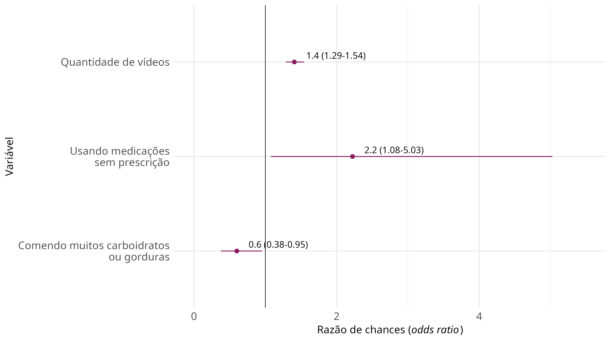

Análise multivariada da resposta subjetiva ao tratamento
Source:vignettes/subjective_response.Rmd
subjective_response.RmdLimpeza e manipulação de dados
Com intuito de limpeza e manipulação dos dados, variáveis como sexo, por exemplo, foram recodificadas para padronizar no momento posterior de modelagem. Criou-se a variável de profissionais da saúde. Gerou-se a variável de quantidade de vídeos, além da imputação de valor ausente para observações com quantidade de vídeos assistidos \(>\) 16.
Posteriormente, recodificou-se mais algumas variável a fim de criar fatores mais friendly para a linguagem.
Modelo multivariado
Para verificar os fatores associados à resposta subjetiva ao tratamento, criou-se um modelo de regressão logística binomial com os escores de depressão, ansiedade, irritabilidade, sono e satisfação com a vida da PROMIS no baseline, também foram incluídas variáveis de idade, sexo, quantidade de vídeos assistidos, faltas no trabalho, se o sujeito realizava algum tipo de tratamento, se era profissional de saúde, escore relacionado aos sintomas de COVID-19, escore de COVID-19 na família e os fatores de risco e proteção incluídos no questionário.
As variáveis com taxas maiores que 10% de valores ausentes foram removidas. Variáveis com pouca ou nenhuma variabilidade (frequência do valor mais prevalente sobre o segundo valor mais prevalente ultrapassar 95/5 e, também, obrigatoriamente apresentar:
\[ ((\text{total de valores únicos}/\text{total de observações}) \times 100) < 10 \]
Se a variavel tivesse apenas um único valor, ela também é removida. Variáveis numéricas com correlações maiores que 0.9 também foram removidas. As variáveis foram imputadas por meio de mediana e moda.
| variavel | or | lower_int | upper_int | pvalue |
|---|---|---|---|---|
| (Intercept) | 1.1362745 | 0.1531060 | 8.5358163 | 0.9006949 |
| b_promis_dep | 0.9736964 | 0.9292258 | 1.0198868 | 0.2610387 |
| b_promis_anx | 1.0130359 | 0.9623383 | 1.0667965 | 0.6216129 |
| b_promis_irr | 0.9729326 | 0.9153138 | 1.0335915 | 0.3753373 |
| b_promis_sleep | 0.9841631 | 0.9458567 | 1.0236330 | 0.4277069 |
| b_promis_sat | 1.0203041 | 0.9814309 | 1.0610371 | 0.3116045 |
| idade | 0.9989339 | 0.9784301 | 1.0201610 | 0.9201018 |
| sexoMasculino | 1.0984375 | 0.5871802 | 2.1522922 | 0.7757805 |
| g_vid | 1.4066239 | 1.2860727 | 1.5443216 | 0.0000000 |
| g_faltas | 1.0069881 | 0.9726515 | 1.0479584 | 0.7113411 |
| b_trat1Sim | 1.4253547 | 0.9034358 | 2.2900866 | 0.1344321 |
| prof_saudeSim | 1.3216505 | 0.7843091 | 2.1876525 | 0.2851085 |
| b_covid_symp | 1.0971385 | 0.9257995 | 1.3131195 | 0.2968908 |
| b_covid_family | 0.9993340 | 0.8312725 | 1.2094064 | 0.9944297 |
| b_cov9aSim | 0.8430372 | 0.5517598 | 1.2816557 | 0.4263710 |
| b_cov9bSim | 0.7565222 | 0.4163995 | 1.4062623 | 0.3672105 |
| b_cov9cSim | 0.8438038 | 0.5589196 | 1.2688738 | 0.4160845 |
| b_cov9dSim | 1.3084522 | 0.6079289 | 3.0416444 | 0.5093310 |
| b_cov9eSim | 1.0778520 | 0.6281048 | 1.9014918 | 0.7900742 |
| b_cov9fSim | 0.9292353 | 0.5487723 | 1.6029644 | 0.7877957 |
| b_cov9hSim | 0.8270117 | 0.5417809 | 1.2639321 | 0.3786916 |
| b_cov9iSim | 1.1054200 | 0.6914851 | 1.7949681 | 0.6797440 |
| b_cov9kSim | 0.9320531 | 0.5661665 | 1.5567977 | 0.7846196 |
| b_cov9lSim | 0.6365865 | 0.2981166 | 1.4102258 | 0.2516022 |
| b_cov9nSim | 0.8791758 | 0.5276249 | 1.4855649 | 0.6249796 |
| b_cov9pSim | 0.5995081 | 0.3766146 | 0.9536203 | 0.0305700 |
| b_cov9qSim | 0.9538828 | 0.5484674 | 1.6849153 | 0.8687009 |
| b_cov9rSim | NA | NA | NA | NA |
| b_cov9sSim | 0.9781432 | 0.4039281 | 2.6506959 | 0.9628096 |
| b_cov9vSim | 2.2230248 | 1.0753496 | 5.0272889 | 0.0406223 |
| b_cov9xSim | 1.3053237 | 0.6220804 | 2.9395203 | 0.4980630 |
| b_cov9zSim | 1.1812794 | 0.5624177 | 2.6419513 | 0.6709781 |
| b_cov9aaSim | 1.0603309 | 0.6302844 | 1.8256241 | 0.8285367 |
| b_cov9bbSim | 1.3005870 | 0.7941382 | 2.1331467 | 0.2962829 |
